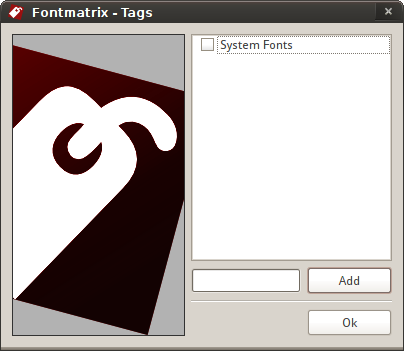
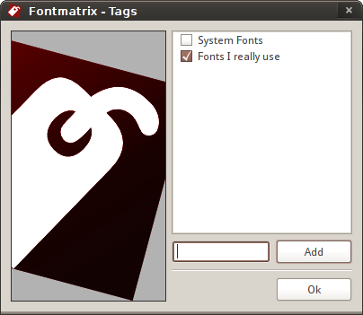
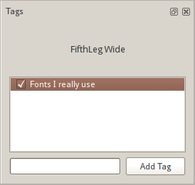

Tags are a great and flexible way to manage your fonts collection, because they don't set restrictions on a way you categorize fonts. You can use tags like "Fonts I bought from AGFA before it was acquired" or "Slab serif fonts my wife hates" or "Fake italic fonts I wouldn't use for my own dear mother" or "Fonts I designed for INSERT_COMPANY_NAME_HERE" or "Serif high contrast text fonts I'm allowed to embed".
There are two ways to add new tags.
The first one is when you add a directory containing fonts (and the "Ask for tag names when importing fonts" options in Preferences is enabled). You will be presented with this dialog:

So this dialog lists all the tags Fontmatrix know about and allows you to pick one of them and/or adda new one. For the latter just enter name of a new tag and click "Add" button. The newly created tag will be automatically used for the fonts you are about to import:

Later when you select a font that has some custom (that is, created by you) tag, the "Tags" pane will have this tag listed:

What is really useful is a massive assigning of tags. Here is how you do it.
FIXME
Right click on a tag in Tags panel allows to Edit it or remove it from DB
FIXME